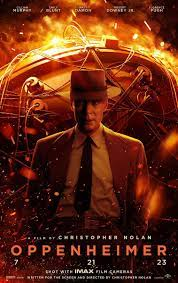
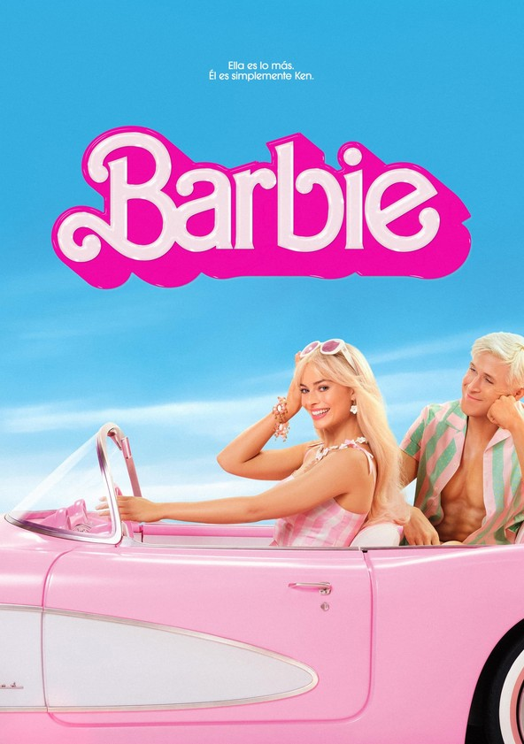
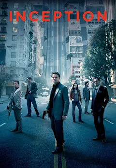
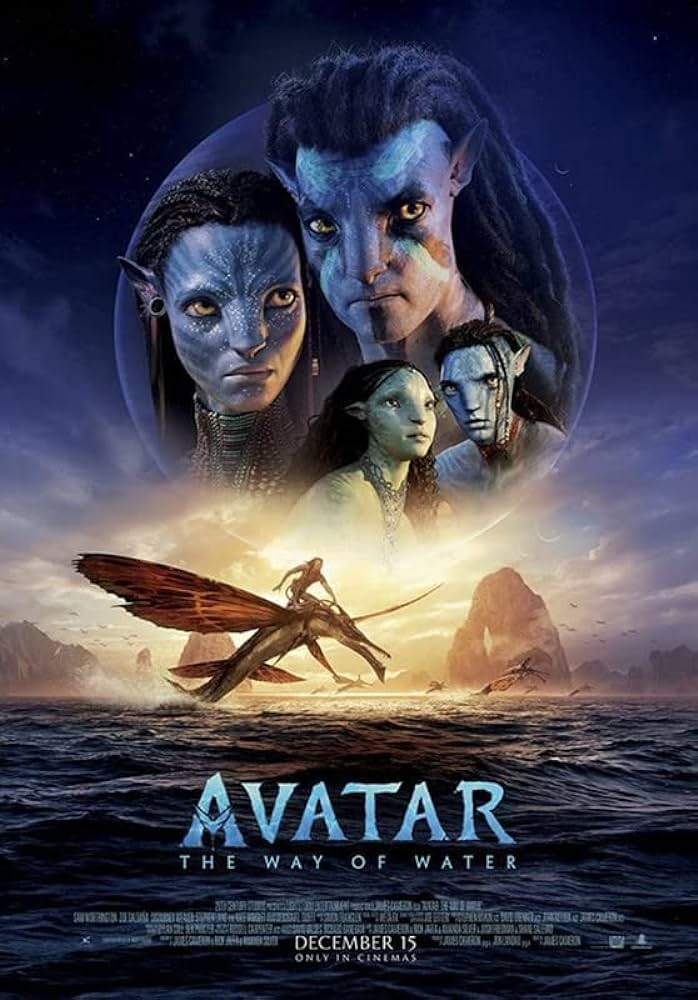

Oppenheimer

Director: Christopher Nolan
Género: Drama
Año: 2023
Sinopsis: Basada en American Prometheus, una biografía de 2005 escrita por Kai Bird y Martin J.
Sherwin,
la cinta narra la vida de J. Robert Oppenheimer, un físico teórico que fue fundamental en el
desarrollo
de las primeras armas nucleares como parte del Proyecto Manhattan y, por lo tanto, marcó el comienzo
de
la era atómica.
Saw X
Director: Kevin Greutert
Género: Terror
Año: 2023
Sinopsis: Saw X es una película de terror estadounidense de 2023, dirigida y editada por Kevin
Greutert,
y escrita por Josh Stolberg y Peter Goldfinger. Es la décima entrega de la serie de películas de
Saw,
que además funciona como secuela directa a Saw (2004) y precuela de Saw II (2005).
Barbie

Director: Greta Gerwig
Género: Comedia
Año: 2023
Sinopsis: Barbie es una película de comedia fantástica estadounidense de 2023, dirigida por Greta
Gerwig
y escrita por Gerwig y Noah Baumbach. Basada en Barbie, la línea de muñecas de moda de Mattel, es la
primera película de acción en vivo de Barbie, luego de numerosas películas animadas por computadora,
lanzadas directas a video y por transmisión televisiva.
Inception

Director: Christopher Nolan
Género: Ciencia Ficción
Año: 2010
Sinopsis: Inception es una película de ciencia ficción escrita y dirigida por Christopher Nolan. La
trama gira en torno a la inserción de ideas en la mente de las personas a través de los sueños. Es
conocida por su compleja narrativa y efectos visuales impresionantes.
The Avengers

Director: Joss Whedon
Género: Acción
Año: 2012
Sinopsis: Los vengadores, dirigida por Joss Whedon, es una película de acción y superhéroes basada en
los cómics de Marvel. La trama sigue la formación del equipo de superhéroes conocido como los
Vengadores, quienes se unen para detener una amenaza alienígena liderada por Loki. La película es
parte del Universo Cinematográfico de Marvel (MCU).
Avatar

Director: James Cameron
Género: Ciencia Ficción
Año: 2009
Sinopsis: Avatar, dirigida por James Cameron, es una película de ciencia ficción ambientada en el
planeta Pandora. La película es conocida por su innovación tecnológica y visual, y sigue la historia
de un marine parapléjico que participa en el programa Avatar y se involucra en un conflicto
interplanetario.